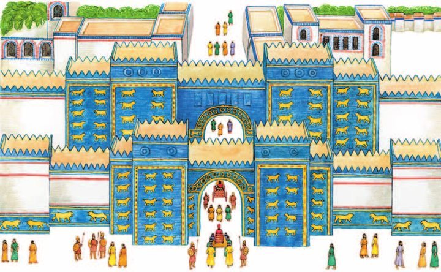
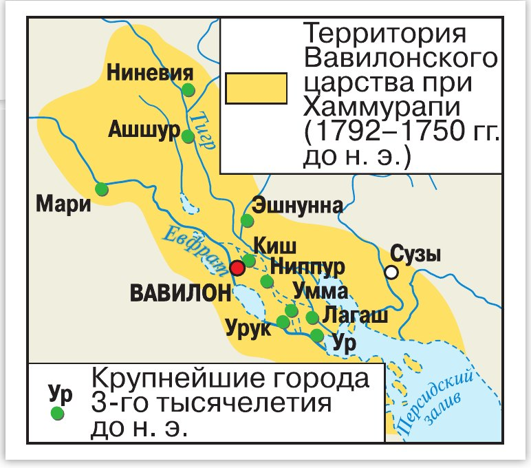
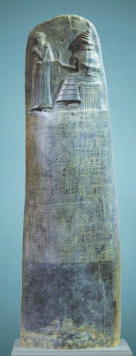
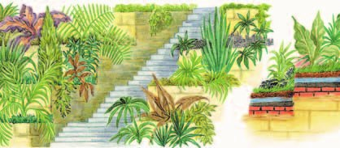
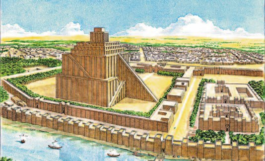
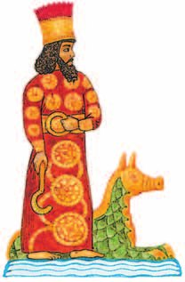

Как возвысился Вавилон
После распада Аккадской державы прошло несколько веков. К началу 2-го тысячелетия до н. э. потомки шумеров тоже перешли на аккадский язык — он стал единственным разговорным языком Южной Месопотамии. Но саму Южную Месопотамию по-прежнему называли Шумер и Аккад.
В это время на берегу Евфрата стоял один из городов — , по-аккадски «Врата бога». Позднее он стал одним из самых больших и богатых городов древности.
Вавилон располагался на большом торговом пути, проходившем вдоль Евфрата. Южная Месопотамия тогда была разделена на несколько царств, воевавших друг с другом: одни погибали, другие возникали.
Одно из царств образовалось со столицей в Вавилоне. Через некоторое время , царь Вавилона, покорил всю Месопотамию, а его преемники удерживали бо́льшую её часть.
С этого времени Южная Месопотамия уже никогда не распадалась на небольшие государства. Здесь стояло Вавилонское царство — Вавилония.
После распада Аккадской державы прошло несколько веков. К началу 2-го тысячелетия до н. э. потомки шумеров тоже перешли на аккадский язык, который стал единственным разговорным языком Южной Месопотамии. Тем не менее Южная Месопотамия по-прежнему называлась Шумер и Аккад.
В это время на берегу Евфрата стоял один из южномесопотамских городов — Вавилон, по-аккадски «Врата бога». Позднее Вавилон стал одним из самых больших и богатых городов древности.
Вавилон располагался на большом торговом пути, проходившем вдоль Евфрата. Южная Месопотамия была в то время разделена на несколько царств, воевавших друг с другом. Одни царства погибали, другие — возникали.
Одно из царств образовалось со столицей в городе Вавилоне. Через некоторое время Хаммурапи, царь Вавилона, покорил всю Месопотамию, а его преемники удерживали бóльшую её часть. С этого времени Южная Месопотамия уже никогда не распадалась на небольшие государства, на этой территории располагалось Вавилонское царство (Вавилония). Языком Вавилонии был один из диалектов аккадского языка.

- Как ты думаешь, почему разобщённые города-государства объединились под властью Вавилона?
1. Что значит название «Вавилон» и что оно говорит о том, как жители относились к своему городу?
2. Почему Южная Месопотамия после Хаммурапи больше не распадалась, хотя раньше распадалась постоянно?
3. Все говорили и писали на аккадском, но страну всё равно звали «Шумер и Аккад». Почему старое имя держалось?
Вавилон при Хаммурапи
Наивысшего могущества Вавилонское царство достигло при Хаммурапи, правившем с 1792 по 1750 год до н. э. Он объединил всю Месопотамию.
В завоёванных областях царь поставил своих . Армию он увеличил: каждый воин получал за службу участок земли с домом, а если воин попадал в плен, царь его выкупал.
Учёные получили ценнейшую находку — , высеченные клинописью на каменном столбе, . Их бережно переписывали жители Вавилонии на протяжении тысячи лет.
Многие статьи защищали интересы простых людей. В Вавилонии была распространена продажа себя и членов своей семьи в рабство за долги. По законам Хаммурапи такое могло длиться не больше трёх лет: три года рабства окупали любой долг, каким бы большим он ни был.
Законы ограничивали максимальные проценты по долгам, вводили твёрдые цены на ряд услуг и одинаковое вознаграждение за разные виды наёмного труда. Похожие законы применяли и в других месопотамских царствах того времени.
При этом законы были суровыми: за многие преступления полагалась смерть или очень большой штраф, иногда — продажа в рабство. А если человеку причинили вред — его жизни, здоровью или имуществу — действовал принцип .
Нашли всё это совсем недавно. Немецкий учёный , мечтавший отыскать загадочный Вавилон, начал раскопки в 1899 году. А столб с законами обнаружила в 1902 году французская экспедиция — причём не в Вавилоне, а в городе Сузы.
После смерти Хаммурапи Вавилонское царство на некоторое время ослабело.
Наивысшего могущества Вавилонское царство достигло при царе Хаммурапи, правившем с 1792 по 1750 год до н. э. Он объединил всю Месопотамию. В завоёванных областях Хаммурапи поставил своих наместников. Царь увеличил армию. Каждый воин получал участок земли с домом в качестве вознаграждения за службу. Когда воин попадал в плен, царь выкупал его.
Учёные получили ценнейшую находку — законы царя Хаммурапи, которые бережно переписывались жителями Вавилонии на протяжении тысячи лет.
Многие статьи законов Хаммурапи защищали интересы простых людей. Так, в Вавилонии была распространена самопродажа и продажа членов своей семьи в рабство за долги. По законам Хаммурапи, такое долговое рабство могло продолжаться не более трёх лет: три года рабства окупали любой долг, каким бы большим он ни был. Законы ограничивали максимальные долговые проценты и вводили твёрдые цены на ряд услуг, фиксированное вознаграждение за разные виды наёмного труда. Похожие законы применяли и в других месопотамских царствах эпохи Хаммурапи.
Законы были суровыми, за многие преступления предусматривалась смерть или очень большой штраф, иногда — продажа в рабство. В случае причинения вреда жизни, здоровью или имуществу человека действовал принцип «око за око, зуб за зуб».
После его смерти Вавилонское царство на некоторое время ослабело.

- Подумай, какое значение для жизни государства имело принятие законов царём Хаммурапи.
- Можно ли назвать законы Хаммурапи справедливыми? Объясни свой ответ.
4. Почему для воина было важно получить за службу участок земли с домом, а не просто плату?
5. Долговое рабство ограничили тремя годами. Почему это была огромная перемена для простого человека?
6. Законы высекли на каменном столбе и поставили на виду. Зачем, ведь читать умели немногие (§10)?
7. Сравни власть Хаммурапи и власть египетского фараона. Что похоже, а что нет?
Нововавилонское царство
В 626 году до н. э. Вавилон восстал против Ассирии, которая раньше его покорила (о ней будет §15). К власти пришла новая династия царей — они смогли вернуть городу утраченное могущество.
Один из них, , захватил часть Малой Азии, важный город Сузы, Сирию, Палестину, Иудейское царство и его столицу Иерусалим.
Из Иерусалима увели несколько тысяч знатных иудеев, но сам город не разрушили. После восстания Навуходоносор захватил его снова и разрушил строения, в том числе знаменитый храм Соломона. Иудейское царство было ликвидировано, большинство жителей увели в плен, а святыни иудеев вывезли в Вавилон.
При нём Вавилон стал богатейшим и красивейшим городом Азии. Сюда стекались товары со всего света, а люди приезжали посмотреть на чудеса, которыми славился город.
Через ворота богини Иштар путешественники попадали на главную улицу. Вдоль неё стояли дворцы царя и вельмож и многоэтажные дома, облицованные цветной плиткой. Здесь же находилось одно из семи чудес света — Семирамиды.
На террасах, поднимавшихся вверх, росли диковинные деревья и цветы. С гор текли искусственные реки, воду для которых поднимали рабы. Сады Навуходоносор построил для своей жены: она родилась в горах и сильно по ним тосковала.
Самым величественным сооружением города была — зиккурат бога . Её огромный силуэт путники видели издалека, ещё только подходя к городу.
Царствование Навуходоносора II было временем расцвета Вавилона. Но на границах появился грозный противник — персы. В 539 году до н. э. Вавилон был захвачен, и Нововавилонское царство пало, став частью державы персов.
В 626 году до н. э. Вавилон восстал против Ассирии, ранее покорившей его. К власти в Вавилоне пришла новая династия царей, которые смогли вернуть ему утраченное могущество. Один из них, Навуходоносор II (2), захватил часть Малой Азии, важный город Сузы, Сирию, Палестину, Иудейское царство и его столицу Иерусалим.
Из города увели несколько тысяч знатных иудеев, но не разрушили его. После восстания в Иерусалиме Навуходоносор II (2) вновь захватил город и разрушил его строения, в том числе знаменитый храм Соломона. Иудейское царство было ликвидировано, большинство жителей увели в плен, святыни иудеев вывезли в Вавилон.
При нём Вавилон стал богатейшим и красивейшим городом Азии. Сюда стекались товары со всего света. Люди приезжали посмотреть на чудеса, которыми славился Вавилон.
Через ворота богини Иштар путешественники попадали на главную улицу города. Вдоль неё стояли дворцы царя и вельмож, многоэтажные дома, облицованные цветной плиткой. Здесь же находилось одно из семи чудес света — висячие сады Семирамиды. На искусственно созданных руками человека террасах, поднимавшихся вверх, росли диковинные деревья и цветы. С гор текли искусственные реки, воду для которых поднимали рабы. Сады построил Навуходоносор для своей жены, родившейся в горах и сильно по ним тосковавшей.
Самым величественным сооружением города была Вавилонская башня — зиккурат Мардука. Её огромный силуэт путники, приближавшиеся к городу, видели издалека.
Царствование Навуходоносора II (2) было временем расцвета Вавилона. Но на его границах появился грозный противник — персы. В 539 году до н. э. Вавилон был захвачен ими, и Нововавилонское царство пало, став частью державы персов.



- Чем отмечено правление Навуходоносора II?
8. Вавилон восстал против Ассирии в 626 году до н. э. и снова стал могущественным. Что это говорит о самом городе?
9. Навуходоносор сначала не разрушил Иерусалим, а потом разрушил. Что изменилось?
10. Почему Вавилон при Навуходоносоре стал богатейшим городом Азии?
11. Вавилонская башня строилась свыше ста лет и простояла недолго. Как это связано с библейской легендой?
Подведём итоги
- Какие стороны жизни вавилонян отражены в законах Хаммурапи? Приведи примеры.
- Сравни власть царя Хаммурапи и фараона Египта. Определи черты сходства и различия.
- Объясни, почему Нововавилонское царство достигло такого могущества.
- Что позволило вавилонянам возводить такие величественные сооружения?
Сформулируй ответ на главный вопрос параграфа — какое значение имели законы Хаммурапи? Приведи два-три довода.
Проверь себя
Нажимай по очереди — от самого древнего события к самому близкому к нам.
1. Что значит слово «Вавилон» по-аккадски?
2. Сколько могло длиться долговое рабство по законам Хаммурапи?
3. Какой принцип действовал при причинении вреда человеку?
4. Кто построил висячие сады?
5. Чем была Вавилонская башня на самом деле?
6. Кто захватил Вавилон в 539 году до н. э.?
Расскажи вслух
Как возвысился Вавилон
- После Аккадской державы прошло несколько веков; все перешли на аккадский, но страну звали Шумер и Аккад.
- Вавилон — «Врата бога» — стоял на Евфрате и на большом торговом пути; вокруг воевали несколько царств.
- Хаммурапи покорил всю Месопотамию; с тех пор юг Междуречья не распадался на мелкие государства.
Хаммурапи и его законы
- Правил с 1792 по 1750 год до н. э.; наместники в областях, увеличенная армия, участок земли воину, выкуп из плена.
- Законы на каменном столбе: долговое рабство не больше трёх лет, потолок процентов, твёрдые цены, плата за наёмный труд.
- Но суровы: смерть, большой штраф, продажа в рабство, «око за око». Столб нашли в Сузах в 1902 году.
Нововавилонское царство
- 626 год до н. э. — восстание против Ассирии, новая династия вернула городу могущество.
- Навуходоносор II: часть Малой Азии, Сузы, Сирия, Палестина, Иудейское царство и Иерусалим; храм Соломона разрушен, жителей увели в плен.
- Вавилон — богатейший город Азии: ворота Иштар, дворцы, цветная плитка, висячие сады, Вавилонская башня. В 539 году его взяли персы.